RAG 是什么？RAG 检索增强面试题万字图解
大家好，我是小林。
之前发了一篇「万字长文图解 Agent 面试题」，意外收获了很多读者的好评与认可。
也收到了不少林友的催更，大家都希望我能出一期 RAG 相关的面试题解析，毕竟现在RAG已是面试中的重点考察内容。
但很多同学一聊到 RAG，就只会说「就是给大模型外挂一个知识库嘛」，再深入问几句：RAG 的完整流程是什么？文档怎么切分？向量数据库怎么选？什么是 Re-rank？什么是多路召回？怎么评估 RAG 的效果？
一连串的问题，就卡壳了。
为了帮大家解决这个痛点，我特意收集了近期大厂RAG高频面试题，整理如下：
- 🌟什么是 RAG？
- 🌟RAG 整体工作流程是怎样的？
- 🌟微调和 RAG 各自区别是什么？
- 🌟RAG 中的文档切割策略有哪些？
- 🌟Re-rank 是什么？
- 🌟Embedding有哪几种算法你了解过吗？
- 🌟什么是向量数据库？有没有做过向量数据库的对比选型？
- 🌟什么是多路召回？具体怎么做？
- 🌟怎么量化你的 RAG 效果？
- 🌟什么是大模型幻觉？怎么降低幻觉？
别急，今天这篇文章，我就用最通俗易懂的方式，把 RAG 相关的核心知识一次性给你讲透。
这些也是面试中经常会被问到的高频问题，搞懂了不仅能应付面试，更能帮你真正理解企业级 RAG 系统的设计思路。
废话不多说，直接开始。
1、什么是 RAG？
聊 RAG 之前，咱们得先搞清楚一个问题：大模型为什么需要「外挂」？
大模型的「知识困局」
你有没有遇到过这样的情况：问 ChatGPT 一个你们公司内部的问题，比如「我们公司今年的年假政策是什么」，它要么告诉你「我无法获取你们公司的内部信息」，要么就开始一本正经地编答案，说得头头是道，但全是错的。
这就是大模型的第一个困境：知识有截止日期。大模型的知识来自于训练数据，而训练数据是有时间窗口的。比如 ChatGPT 的某个版本，训练数据的截止日期是 2023 年 4 月，那么 2023 年 4 月之后发生的任何事情，它都不知道。你问它 2026 年发生了什么大事，它要么说不知道，要么就开始「编」。
第二个困境是：大模型不知道你公司的私有数据。你公司的产品文档、内部规章制度、客户信息、项目资料……这些数据从来没有出现在大模型的训练集中，它怎么可能知道？
第三个困境是：大模型会「幻觉」。所谓幻觉，就是大模型会非常自信地说出一些听起来很专业但完全是编造的内容。你问它一个不存在的研究论文，它能给你编出一个标题、作者、摘要、甚至 DOI 号，看起来像模像样，但全是假的。这在需要高准确性的场景（比如医疗、法律、金融）中，是不可接受的。
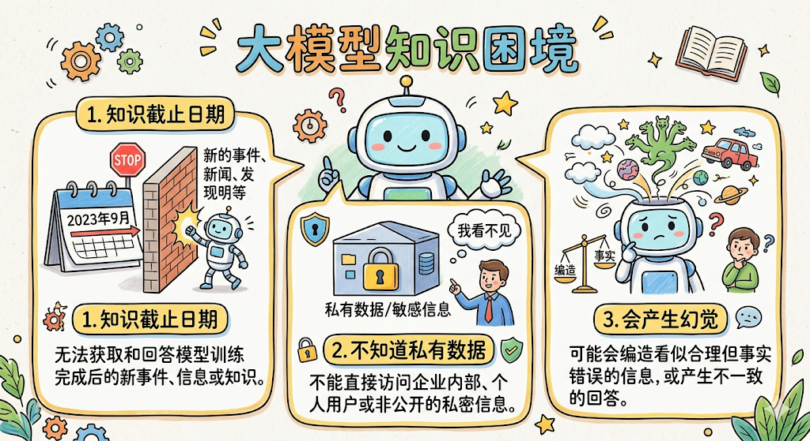
img
那怎么办？给大模型「开卷考试」
理解了这三个困境，你就能理解 RAG 要解决什么问题了。
打个比方。大模型就像一个参加了「闭卷考试」的学生，所有知识都得靠脑子记。但这个考试有个问题：题目会问到最新的知识（知识截止日期）、会问到课本上没有的内部资料（私有数据），而且这个学生还会「编答案」（幻觉）。
那怎么解决？最直觉的办法就是给他开卷考试，允许他翻参考书。
RAG 就是这个思路。RAG 的全称是 Retrieval-Augmented Generation，翻译过来就是「检索增强生成」。核心思想非常简单：
- 先从外部知识库中检索（Retrieval） 出和用户问题相关的资料
- 把检索到的资料作为增强（Augmented） 上下文，和用户的问题一起给到大模型
- 大模型基于这些真实的资料来生成（Generation） 回答
这样一来，大模型的回答就有了「依据」，不再是凭空编造，而是基于真实文档生成的。知识可以随时更新（更新知识库就行），私有数据也能用了（把公司文档放进知识库），幻觉问题也大幅减少了（有真实资料做参考）。
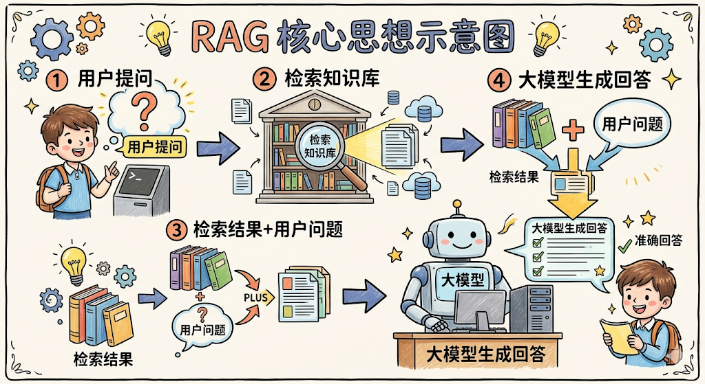
img
RAG 这个概念是怎么来的？
RAG 这个概念最早是由 Facebook（现 Meta）的研究团队在 2020 年提出来的。
简单来说，他们提出了一个思路：在模型回答问题之前，先从外部文档中检索出相关的内容，再把检索到的内容作为参考喂给模型，让模型基于这些内容来生成回答。
但说实话，2020 年那会儿大模型还没那么火，RAG 这个概念也只是学术圈在讨论。真正让 RAG 火起来的，是 2023 年 ChatGPT 爆红之后，大家发现大模型在实际应用中有那么多局限性，而 RAG 恰好能很好地解决这些问题。13
到了现在，RAG 已经成为企业落地 AI 应用的标配技术。不管是大厂还是创业公司，只要做大模型应用，几乎都绕不开 RAG。
RAG 不是万能的
聊到这里，你可能觉得 RAG 好像什么都能解决。但等一下，RAG 真的万能吗？ 答案显然不是。它解决的是「大模型缺乏特定知识」的问题，但它不能：
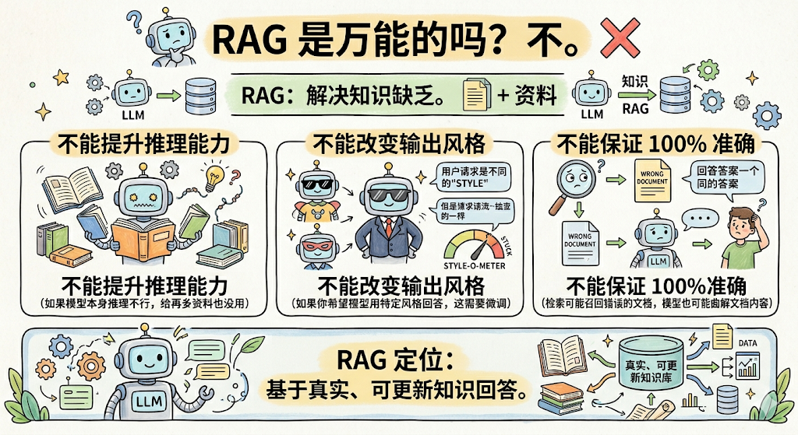
img
- 改变大模型的推理能力（如果模型本身推理不行，给再多资料也没用）
- 改变大模型的输出风格（如果你希望模型用特定风格回答，这需要微调）
- 保证 100% 的准确性（检索可能召回错误的文档，模型也可能曲解文档内容）
所以 RAG 更准确的定位是：一种让大模型基于真实、可更新的知识来回答问题的技术方案。它和微调、Prompt Engineering 等技术是互补的，而不是替代关系。
2、RAG 整体工作流程是怎样的？
搞清楚了 RAG 是什么，下一步自然就是：RAG 系统到底是怎么运转的？
很多同学对 RAG 的理解停留在「就是检索+生成」这个层面，但真正要搭建一个 RAG 系统，远比这复杂。一个完整的 RAG 系统其实分为两个大阶段：索引阶段（离线） 和 查询阶段（在线）。
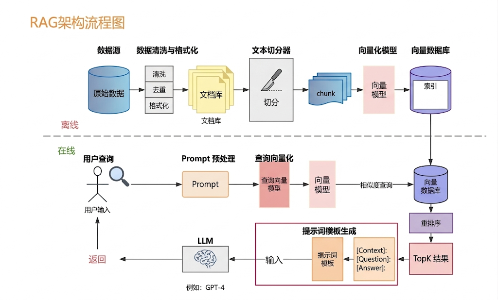
img
先用一个生活化的例子来理解
在讲技术流程之前，咱们先用一个生活化的例子来理解。
想象你在准备一场开卷考试。考试前，你需要先把所有参考书整理好：给每本书贴上标签、做目录索引、把重点内容标注出来。这就是「索引阶段」，它是在考试前完成的准备工作，不需要实时响应。
考试开始了，你拿到一道题目，你会怎么做？首先理解题目在问什么，然后在参考书中快速找到相关的章节，接着阅读找到的内容，最后基于这些内容组织你的答案。这就是「查询阶段」，它是实时进行的，需要快速响应。
RAG 的工作流程和这个一模一样。
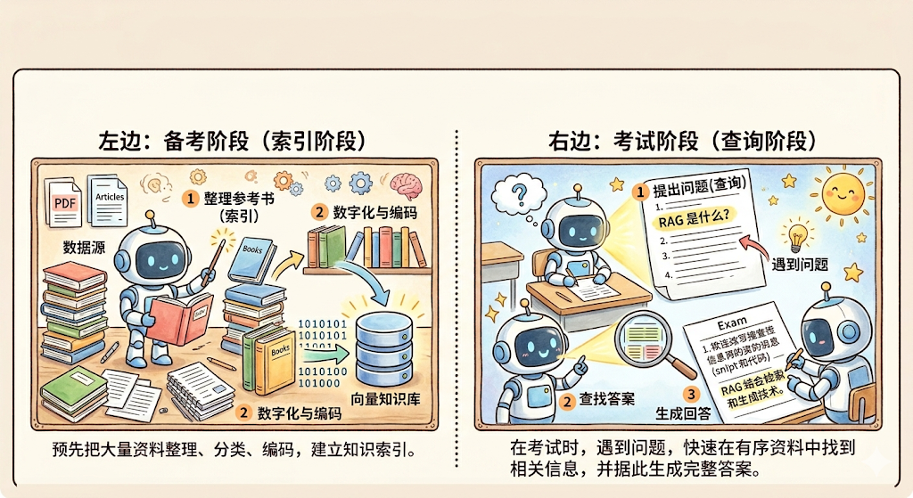
img
索引阶段：把知识「整理好」
索引阶段的目标是把各种非结构化的文档，变成可以被高效检索的形式。这个阶段通常包括以下几个步骤：
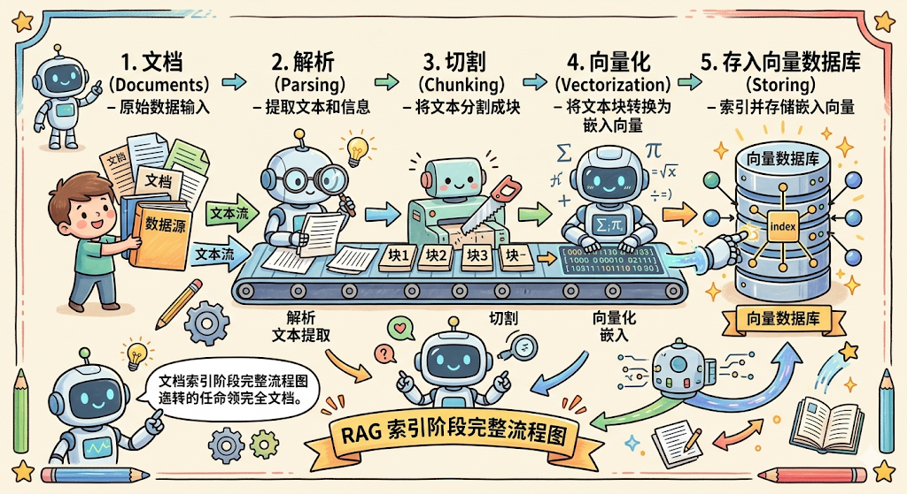
img
第一步：文档加载
这一步是把各种格式的文档加载进来。企业里的文档格式五花八门，PDF、Word、Excel、PPT、HTML、Markdown……每种格式都有不同的解析方式。比如 PDF 就比较麻烦，尤其是包含表格、图片、多栏排版的 PDF，解析起来很费劲。这一步的目标是把各种格式的文档统一转成纯文本。
第二步：文档切割（Chunking）
文档加载完之后，你不可能把一整本 100 页的文档直接扔给大模型，因为大模型的上下文窗口是有限的。所以需要把长文档切成一个个小的文本块（Chunk），每个文本块大概几百到几千个字符。
但切割这个事情没有看起来那么简单。你如果机械地按固定长度切，很可能一句话被切成了两半，或者一个完整的段落被拆开了，这样检索的时候就会丢失上下文。所以文档切割策略是 RAG 系统中非常关键的一环，后面我会专门用一整节来讲。
第三步：向量化（Embedding）
文本块切好之后，下一步是把每个文本块转换成一个数学向量（一串数字）。这个步骤叫 Embedding（嵌入）。你可以这样理解：Embedding 模型把一段文本「翻译」成了一个高维空间中的坐标点，语义相近的文本在这个空间中的距离也相近。
比如「今天天气很好」和「今天阳光明媚」这两句话意思差不多，它们经过 Embedding 之后，在向量空间中的距离就会很近。而「今天天气很好」和「Python 是一种编程语言」意思差很远，在向量空间中的距离也会很远。
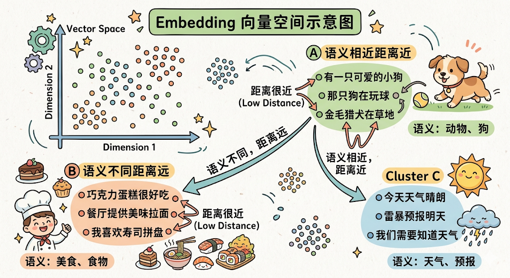
img
第四步：存入向量数据库
最后一步，就是把所有文本块的向量存入向量数据库。向量数据库是专门用来存储和检索向量的数据库，它能高效地进行「相似度搜索」，也就是给你一个查询向量，它能快速找到和它最相近的 Top-K 个向量。
这一步做完，你的知识库就建好了。
查询阶段：让大模型「翻书找答案」
知识库建好之后，当用户提出问题时，就进入查询阶段。
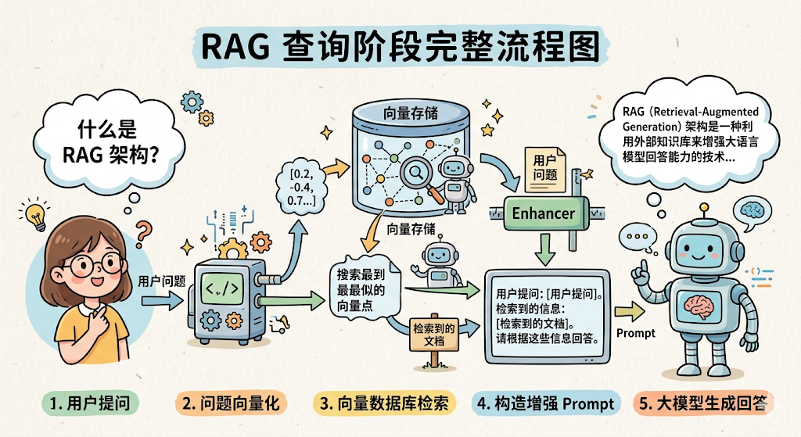
img
第一步：用户提问向量化
用户提出一个问题，比如「公司年假政策是什么」。系统首先用同样的 Embedding 模型，把这个问题也转换成一个向量。
第二步：相似度检索
拿着问题的向量，去向量数据库中进行相似度搜索，找到和这个问题语义最相近的 Top-K 个文本块。比如可能检索出了这样几个文本块：
- 「公司全职员工入职满一年后享有 10 天带薪年假」
- 「年假可以拆分使用，每次不少于半天」
- 「未使用的年假可以累积到下一年，但最多累积 5 天」
第三步：构造增强 Prompt
把检索出来的文本块和用户的原始问题拼在一起，构造一个增强版的 Prompt。大概长这样：
「请根据以下参考资料回答用户的问题。参考资料：[检索出的文本块]。用户问题：公司年假政策是什么？」
第四步：大模型生成回答
把增强版的 Prompt 发给大模型，大模型基于这些真实的参考资料来生成回答。因为它有了具体的参考资料，就不会凭空编造了。
完整流程一览
把索引阶段和查询阶段合在一起，就是 RAG 的完整工作流程：
- 索引阶段（离线）：文档加载→文档切割→文本向量化→存入向量数据库
- 查询阶段（在线）：用户提问→问题向量化→向量检索→构造增强Prompt→大模型生成回答
这是最基础的 RAG 流程，也被称为 Naive RAG（朴素 RAG）。
在实际生产中，为了提升效果，还会加入查询改写、多路召回、重排序（Re-rank）等高级技术，这些后面都会讲。
3、微调和 RAG 各自区别是什么？
了解了 RAG 的基本概念和工作流程后，你可能会有一个疑问：想让大模型学会新知识，不是还可以用微调吗？那 RAG 和微调到底有什么区别？什么时候该用哪个？
这个问题非常重要，也是面试中的高频问题。
先搞清楚什么是微调
微调（Fine-tuning），简单来说就是拿一个已经预训练好的大模型，用你自己的数据对它进行进一步的训练，让它在特定领域或特定任务上表现更好。
打个比方。大模型预训练完之后，就像一个高中毕业生，知识面很广，语数外理化生样样都懂一些。但如果你要让他当一个专业的医生，就需要送他去医学院继续学习，这个过程就类似于「微调」。
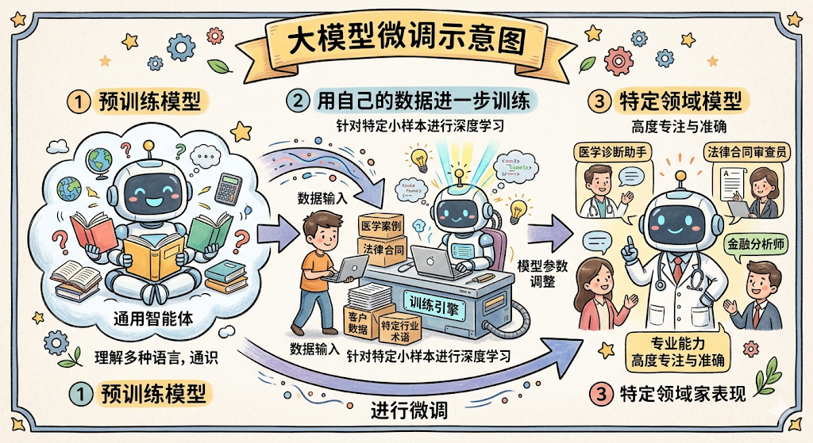
img
微调的方式也有不同的级别。
- 最重的方式是全量微调，也就是更新模型的所有参数，效果最好但成本极高，需要大量 GPU 资源，一般只有大厂才玩得起。
- 比较轻量的方式叫参数高效微调，比如现在最流行的 LoRA 技术，它只训练一个很小的「低秩适配器」，不动模型主体，所以硬件需求大幅降低，一张消费级显卡就能跑。
- 还有一种叫指令微调，是用「指令-回答」格式的数据来微调，目的是让模型学会听懂指令、按指令来回答，而不是自由发挥。
用一个最直观的类比来理解区别
网上有个类比我觉得非常好，分享给大家。
微调相当于让模型去上了一门课，知识已经「内化」到脑子里了。考试的时候是闭卷考试，模型靠「记忆」来回答。但记忆可能会出错，而且新知识需要重新上课（重新训练）。
RAG 则相当于给模型配了一个参考书架，考试的时候是开卷考试，模型可以翻书找答案。参考书可以随时更新，新增知识不需要重新训练模型。
这个类比把两者的核心区别说得非常到位。
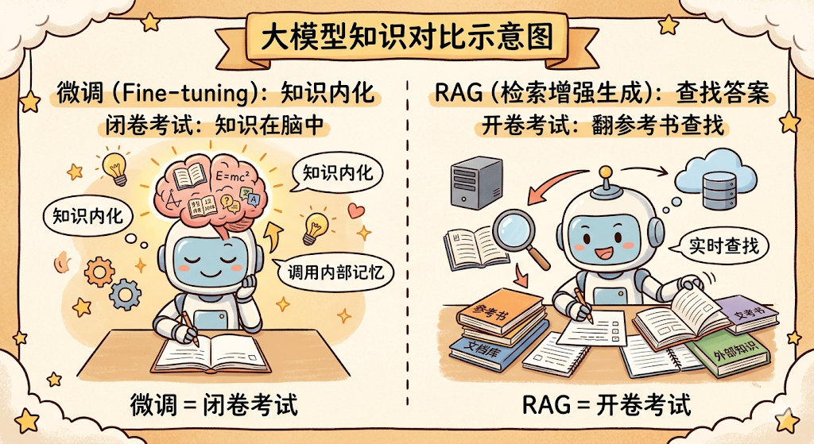
img
核心维度的对比
接下来咱们从几个关键维度来对比一下。
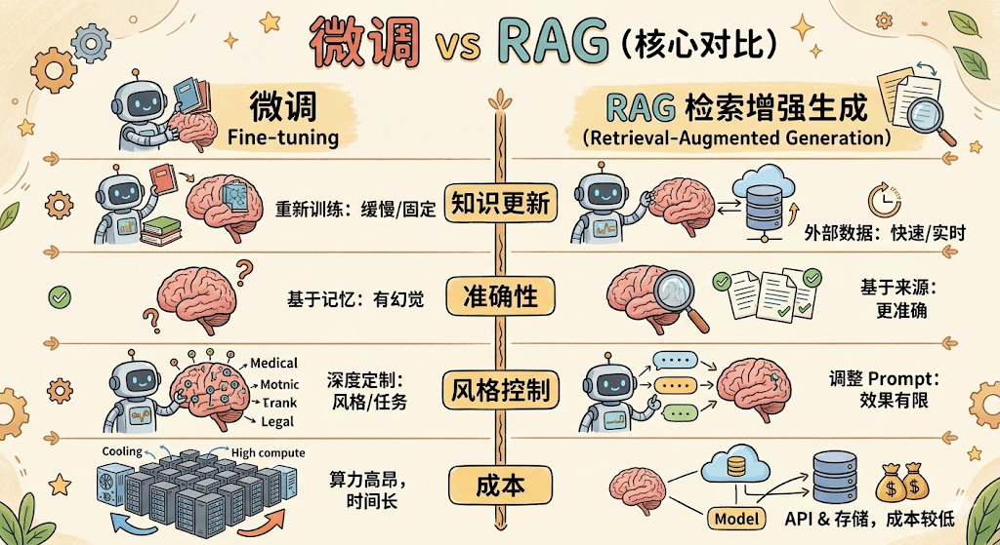
img
知识更新方式
这是两者最核心的差异。微调要更新知识，就得重新训练模型，成本高、周期长。你们公司每个月都更新产品手册吧？如果用微调，每个月都得重新训练一次模型，想想都觉得累。但 RAG 就简单多了，只需要把新的产品手册替换掉知识库里的旧文档，重新做一下索引就行，模型完全不用动，成本极低，而且几乎可以实时更新。
准确性
微调的模型是靠「记忆」来回答的，就像闭卷考试，有可能记错或者记混。而且很多人有个误解，以为微调后模型就会严格按照训练数据来回答，其实不是的。微调更多是让模型学到了数据的「模式」和「风格」，对具体事实的准确性并不一定有保障。RAG 就不一样了，回答是基于检索到的真实文档的，可追溯、可验证，只要检索不出大问题，准确性通常比微调更高。
语言风格控制
这个维度反而是微调的强项。如果你希望模型用文言文回答、用特定的客服话术回答、模仿某个名人的说话方式，微调能做到。因为它在训练过程中就学会了这种风格。RAG 对输出风格的控制能力就比较有限了，检索到的内容只是给模型的「参考」，但模型最终怎么组织语言，还是取决于模型本身。
成本
两者的成本结构不一样。微调的初始成本高，你需要准备大量高质量训练数据、租 GPU 资源，但推理阶段的成本相对较低，因为不需要走检索流程。RAG 正好反过来，初始成本低，不需要训练模型，建个知识库就行，但每次查询都有检索开销，token 消耗也更多，因为你得把检索到的文档都塞进 Prompt 里。
什么时候用微调，什么时候用 RAG？
说了这么多对比，到底该怎么选？我直接说说我的看法。
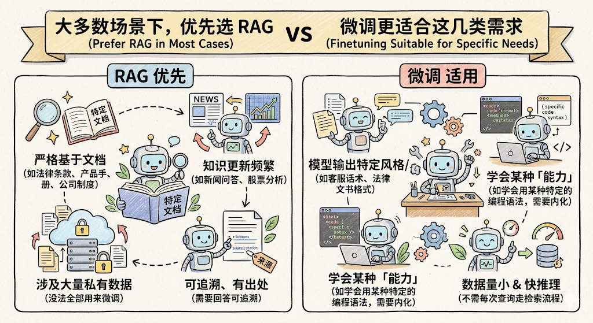
img
大多数场景下，优先选 RAG。 尤其是需要回答的内容必须严格基于特定文档（比如法律条款、产品手册、公司制度），或者知识更新频繁（比如新闻问答、股票分析），或者涉及大量私有数据没法全部用来微调，再或者需要回答可追溯、有出处的场景，RAG 都是最合适的选择。
微调更适合这几类需求。 一是你需要模型输出特定的风格或格式，比如客服话术、法律文书格式，这种「风格」层面的需求微调更擅长。二是你需要模型学会某种「能力」而不仅仅是「知识」，比如学会用某种特定的编程语法，这种需要内化的能力微调效果更好。三是你的数据量不大且不经常更新，而且对推理速度有很高要求，不想每次查询都走检索流程。
不过话说回来，在实际生产中，最成熟的做法其实是微调 + RAG 结合。先用微调让模型适应你的领域和风格（比如让它学会你的行业术语和回答格式），再用 RAG 来提供实时、准确的知识支撑。两者互补，效果最好。
这就好比先送员工去培训（微调），让他学会这个行业的专业知识和做事方式；再给他配一个可随时查询的资料库（RAG），让他能随时查到最新的信息。
4、RAG 中的文档切割策略有哪些？
前面讲 RAG 工作流程的时候提到过，文档切割（Chunking）是索引阶段非常关键的一步。这一步做得好不好，直接决定了后面检索的质量，进而影响最终回答的准确性。
那文档切割到底有哪些策略？各有什么优劣？咱们来展开聊聊。
为什么文档切割这么重要？
先问一个基本的问题：为什么不直接把整篇文档存进去，非要切成小块？
最根本的原因是大模型的上下文窗口有限。虽然现在大模型的上下文窗口越来越大，GPT-4 Turbo 已经支持 128K tokens，Claude 3 更是号称支持 200K tokens，但你不可能把知识库里的所有文档都塞进一次请求的 Prompt 里。所以必须先检索出最相关的部分，再把这部分内容喂给大模型。
而要检索，就得先把文档切成小块，这样才能精确匹配到和用户问题最相关的那个片段。如果你不切割，整篇文档作为一个检索单元，那用户问「公司年假多少天」，你可能会把整个 100 页的员工手册都检索出来，大模型的上下文窗口根本装不下。
但切割这个事有个两难：
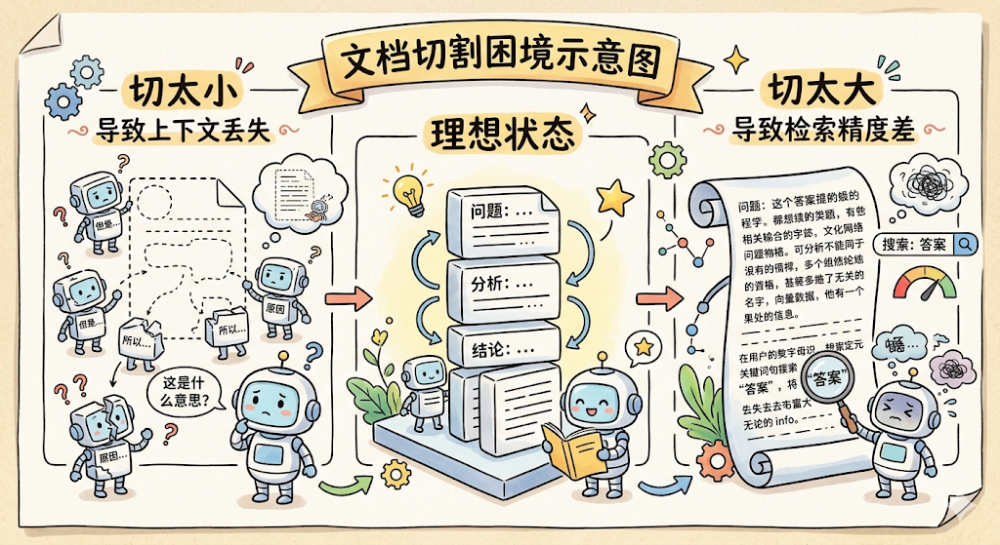
img
- 切得太小：每个文本块信息太少，可能丢失上下文。比如把「公司全职员工入职满一年后享有 10 天带薪年假」切成「公司全职员工入职满一年后享有」和「10 天带薪年假」，第一块根本不知道在说什么。
- 切得太大：每个文本块信息太多，检索精度下降，而且浪费大模型的上下文窗口。
所以，怎么切、切多大、在哪切，就成了一门学问。
策略一：固定大小切割
最简单粗暴的方法，就是按照固定的字符数或 token 数来切。比如每 500 个字符切一块。
这个方法的好处是简单、可预测、容易实现。但缺点也很明显：它完全不考虑文本的语义和结构，很可能把一句话或一个段落从中间切开。
比如下面这段话：
「公司全职员工入职满一年后享有 10 天带薪年假。年假可以拆分使用，每次不少于半天。」
如果按固定 30 个字符来切，可能会切成：
- 「公司全职员工入职满一年后享有 10」
- 「天带薪年假。年假可以拆分使用，每次不」
- 「少于半天。」
这就完全破坏了语义。
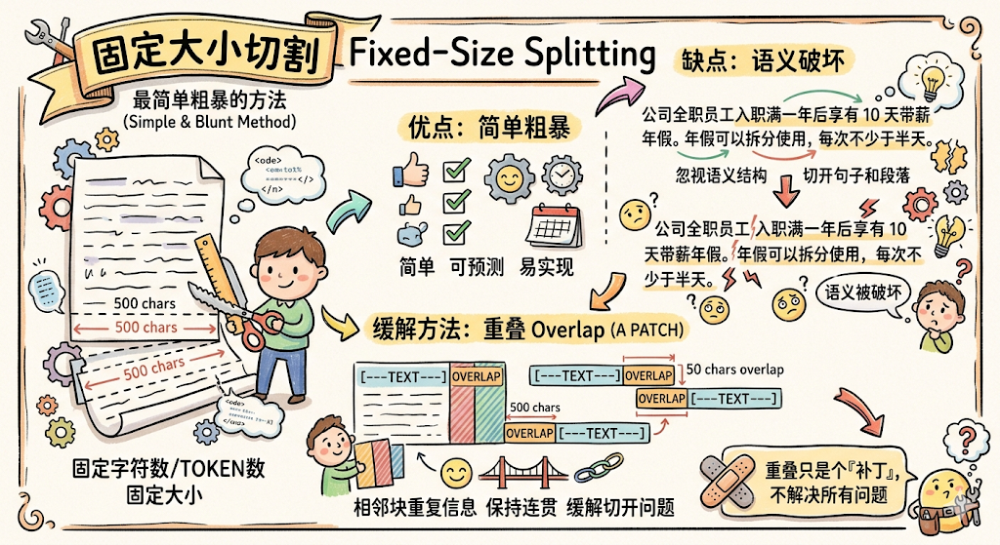
img
为了缓解这个问题，通常会引入重叠（Overlap），也就是相邻的两个文本块之间有一段重复的内容。比如每个块 500 字符，重叠 50 字符，这样即使句子被切开了，相邻块之间还有一部分重复信息可以保持连贯。
不过重叠也不能解决所有问题，只能算是一个「补丁」。
策略二：递归字符切割
这是目前最常用的切割策略，也是 LangChain 框架中 RecursiveCharacterTextSplitter 的实现方式。
它的核心思想是：按照文本的自然边界来切，而不是死板地按字符数切。
具体来说，它维护一个分隔符的优先级列表，比如 ["\n\n", "\n", "。", "！", "？", "；", "，", " "]。它会先尝试用双换行符（段落分隔符）来切，如果切出来的块还是太大，就用单换行符来切，如果还是太大，就用句号来切……依次类推，直到块的大小符合要求。
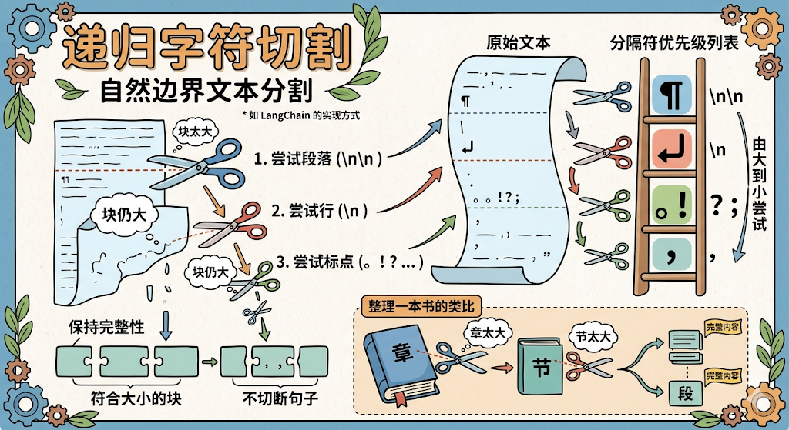
img
这样做的好处是，它尽量保持段落、句子、短语的自然完整性，不会把一句话从中间切开。
打个比方，这就像你整理一本书的时候，先按「章」来分，一章太大的话就按「节」来分，一节太大的话就按「段」来分。这样分出来的结果，每块内容都是相对完整和独立的。
策略三：基于文档结构的切割
这种方法是利用文档本身的格式结构来切割。
比如 Markdown 文档，可以按照标题层级来切：一级标题下面是一块，二级标题下面是一块。这样切出来的内容天然具有语义完整性。
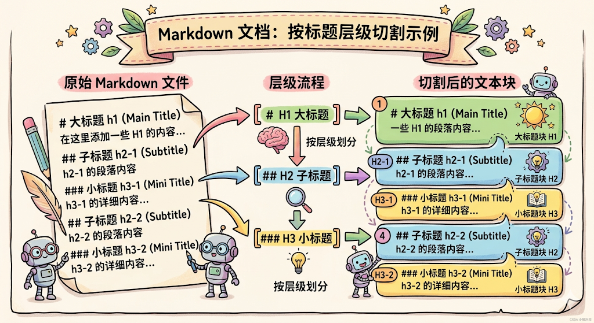
img
再比如代码文件，可以按函数、类来切。HTML 可以按标签来切。PDF 可以按页面来切。
这种方法的好处是充分尊重文档的结构，切出来的块语义完整。但缺点是只适用于格式规范的文档，如果文档本身结构混乱，或者没有明显的格式标记，就不太好用了。
策略四：语义切割
前面三种方法都是基于「规则」的，不管内容是什么，都按照预设的规则来切。语义切割则不一样，它是基于内容的语义相似度来决定在哪切。
核心思想是：把语义相似的句子放在一起，语义发生转折的地方就是切割点。
具体怎么做呢？先把文档按句子切分，然后计算相邻句子之间的语义相似度（用 Embedding 模型把句子转成向量，然后计算余弦相似度）。如果相邻句子的相似度很高，说明它们在讨论同一个话题，应该放在同一个块里；如果相似度突然下降，说明话题发生了转变，这里就是一个切割点。
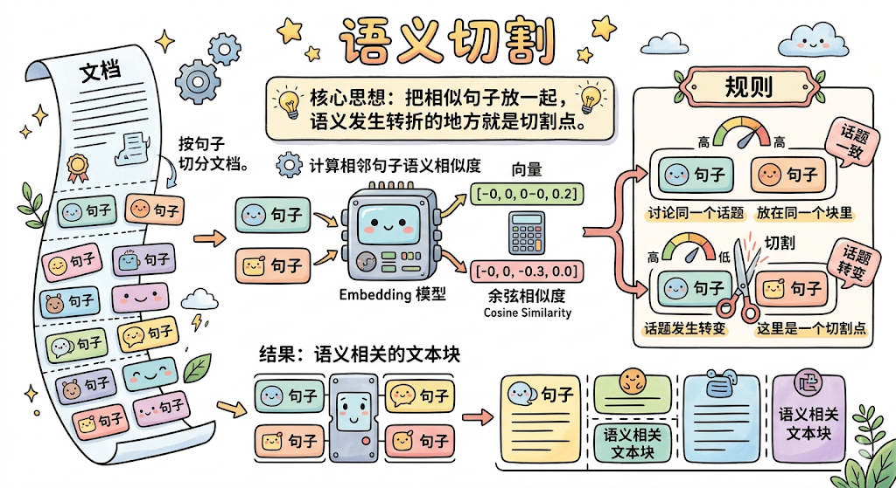
img
打个比方，一篇文章前半段在讲「TCP 三次握手的原理」，后半段在讲「UDP 协议的特点」。这两个话题虽然都属于网络协议，但语义上有明显的转变。语义切割就能识别出这个转变点，在前半段和后半段之间切一刀。
这种方法的切割质量最高，但计算成本也最大，因为需要对每个句子都做 Embedding 计算。
策略五：Agent 驱动的智能切割
这是最近出现的前沿方法。思路是用 LLM 本身来判断应该怎么切。
具体做法是：先用上述方法生成初始的文本块，然后用 LLM 来审视每个块，判断这个块的内容是否完整、是否需要和相邻的块合并或拆分。LLM 充当一个「智能编辑」的角色，根据对内容的理解来做出切割决策。
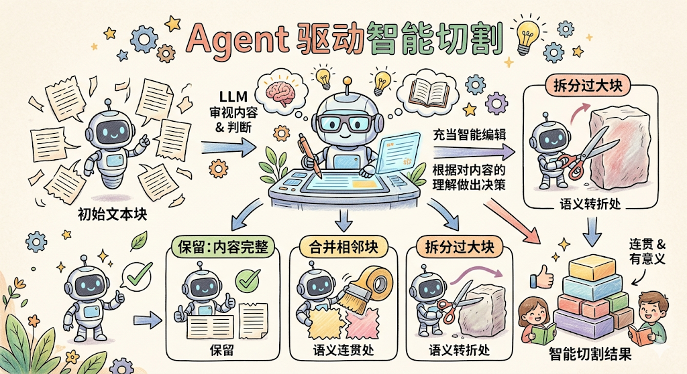
img
这种方法理论上效果最好，因为 LLM 能理解文本的深层语义。但成本也是最高的，因为需要大量调用 LLM。
实战中的建议
在实际项目中，不需要追求最复杂的方法。一个务实的策略是：
- 起步阶段：直接用递归字符切割（
RecursiveCharacterTextSplitter），块大小 256-512 tokens，重叠 10%-20%。这个方案简单有效，能覆盖大多数场景。 - 优化阶段：如果你的文档有清晰的结构（Markdown、HTML），切换到基于文档结构的切割，通常能带来显著的提升。
- 进阶阶段：如果对检索质量有更高要求，尝试语义切割或者「父子块」策略（存储小块用于精准检索，但返回给大模型的是包含上下文的父块）。
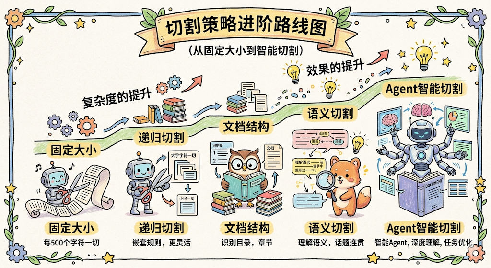
img
5、Re-rank 是什么？
前面讲 RAG 工作流程的时候，你可能注意到了一个问题：向量检索返回的结果，顺序一定是最优的吗？
答案是：不一定。 这就是 Re-rank（重排序）要解决的问题。
先理解一个核心问题
在 RAG 系统中，检索阶段用的是 Bi-Encoder（双编码器），也就是 Embedding 模型。它的工作方式是把查询和文档分别编码成向量，然后通过计算向量之间的余弦相似度来判断相关性。
这种方式有一个先天的不足：它是把查询和文档「分别」处理的。模型在编码一篇文档的时候，根本不知道用户会问什么问题。所以它只能生成一个「泛化的、平均化的」语义向量，无法针对具体的查询做优化。
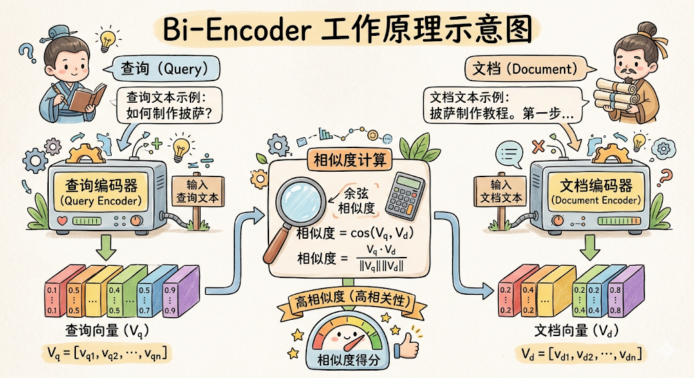
img
打个比方。这就像一个图书管理员在给每本书写摘要的时候，不知道读者会问什么问题。他只能写一个通用的摘要，覆盖这本书的主要内容。但读者来问「这本书有没有讲到 XX」的时候，通用摘要可能不够精确。
更具体地说，Bi-Encoder 有两个关键缺陷。
一是信息压缩损失。就好比你用一句话来总结一篇论文，再精彩的总结也不可能把每个细节都留住。Embedding 也是一样，一段几百字的文本被压缩成一串数字，那些细微但关键的信息可能就丢了。
二是缺乏查询意图感知。文档的向量是在索引阶段就预先计算好的，那时候根本不知道用户会问什么。所以同一篇文档的向量，不管用户是在问事实、做对比分析还是查步骤说明，都是完全一样的，没法根据不同的问题做出针对性的判断。
Cross-Encoder：让查询和文档「面对面交流」
Re-rank 使用的是 Cross-Encoder（交叉编码器）。它和 Bi-Encoder 的根本区别在于：它把查询和文档拼在一起，让模型同时看到两者，进行深度的交互分析。
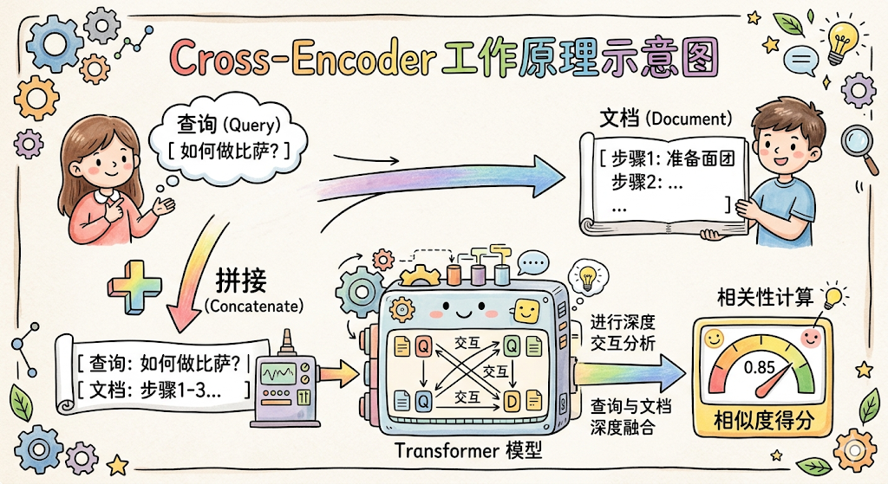
img
具体来说，Cross-Encoder 把查询和文档拼成这样一个输入：
[CLS] 用户的问题 [SEP] 检索到的文档内容 [SEP]
然后把整个输入送进 Transformer 模型，通过自注意力机制（Self-Attention），让查询中的每个词都能和文档中的每个词进行交互。模型能精确地分析查询的每个关键词在文档中是否有对应的回答，文档的内容是否真正满足了查询的意图。
打个比方。如果说 Bi-Encoder 是「各自写好简历然后匹配」，Cross-Encoder 就是「面对面面试」，面试官（查询）可以直接针对候选人（文档）的具体经历逐条追问，判断他是否真的适合这个岗位。
为什么不直接用 Cross-Encoder？
你可能要问：既然 Cross-Encoder 这么厉害，为什么不直接用它来检索？
答案是：太慢了。
Bi-Encoder 的检索之所以快，是因为文档的向量是预先计算好的，检索的时候只需要计算查询的向量，然后做向量相似度搜索就行，几毫秒就能搞定。
而 Cross-Encoder 需要把查询和每一个候选文档都拼在一起，送进模型做一次完整的推理。如果你有 1000 万篇文档，就要做 1000 万次推理，这个速度完全不可接受。
所以实际的方案是两阶段检索。
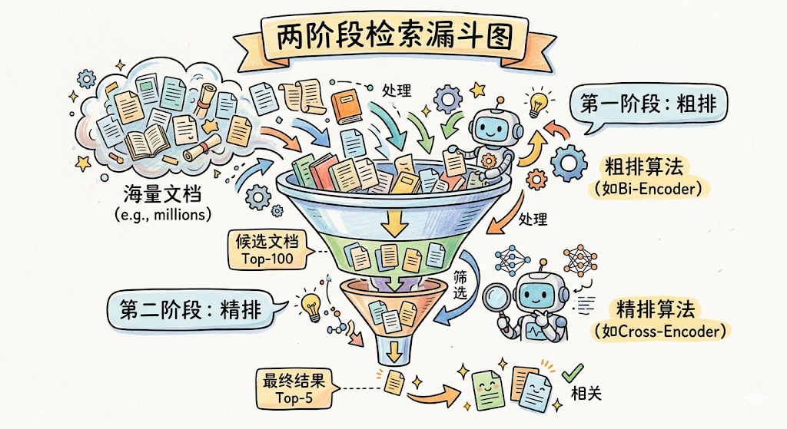
img
第一阶段用 Bi-Encoder（向量检索）快速从全部文档中筛出 Top-50 或 Top-100 候选文档，这一步追求的是速度和召回率，宁可多捞一些，不能漏掉相关的。
第二阶段再用 Cross-Encoder（Re-rank）对这 50-100 个候选文档做精细化重排序，因为数量已经很少了，所以即使是较慢的 Cross-Encoder 也能在可接受的时间内完成。
主流的 Re-rank 模型有哪些？
目前市面上的 Re-rank 模型选择还挺多的，我聊聊几个主流的。
Cohere Rerank 是目前用得最多的商业方案之一，它是一个 SaaS API 服务，效果好、接入简单，基本上几行代码就能用起来。如果你的项目预算充足，不想自己部署模型，Cohere 是最省心的选择。
如果你更倾向开源方案，BGE-Reranker 是目前开源模型里的标杆，由智源研究院出品，有 base 和 large 两个版本。它在中文场景下表现特别好，而且可以本地部署，数据安全有保障。很多国内企业在生产环境中用的就是它。
ms-marco-MiniLM 是微软基于 MiniLM 训练的一个轻量级 Cross-Encoder，模型体积很小，推理速度快，适合资源有限的场景。比如你的服务器 GPU 不多，或者对延迟要求很高，这个模型就很合适。
另外还有 Jina Reranker，Jina AI 出品的，支持多语言，如果你有英文之外的检索需求可以关注一下；以及 bce-reranker，网易有道开源的双语重排序模型，中英文混合场景下效果不错。
Re-rank 带来了多大的提升？
光说原理你可能没什么感觉，咱们用数据说话。根据多个研究和实际测试的结果，加入 Re-rank 后的效果提升是非常显著的。
在复杂查询场景下，比如那种需要多跳推理的问题（「A 公司收购了 B 公司后，B 公司的创始人去了哪里」这种需要串联多个文档的问题），准确率提升可以达到 40% 到 50%，效果非常惊人。在简单的事实查询场景下，提升相对小一些，大约 18% 左右。在模糊查询场景下（用户的表述不太精确），提升约 30% 到 40%。
另外 Databricks 的测试还表明，经过重排序后的检索结果，能让大模型的幻觉率降低约 35%。这说明 Re-rank 不只是让检索更准了，它还能间接提升最终回答的质量和可靠性。
实战中的建议
最后分享几个实战中的经验。首先是候选数量的设置，先检索 50 到 100 个候选，再重排到 Top-5 或 Top-10，这个配置性价比最高。候选太多会增加 Re-rank 的耗时，候选太少又可能把真正相关的文档漏掉。
其次，不需要所有查询都做 Re-rank。对于简单的事实查询，Re-rank 的提升有限，你可以设置一个条件触发机制，比如只在初排 Top-1 的分数低于某个阈值时才启动重排序。但对于复杂查询，Re-rank 的收益非常大，建议始终开启。
6、Embedding 有哪几种算法你了解过吗？
前面讲 RAG 工作流程的时候，我们反复提到一个词「Embedding」：文档要 Embedding，用户提问也要 Embedding，然后才能做相似度检索。
但你有没有想过：Embedding 到底是怎么把文字变成数字的？不同的 Embedding 方法有什么区别？选哪种最适合我的场景？
这一节咱们就来把 Embedding 技术的前世今生聊清楚。
为什么要花这么多篇幅讲 Embedding 的演进？因为你只有理解了这个演进过程，才能明白为什么现在大家都推荐用 BGE-M3 这种新一代模型，而不是随便选一个 Embedding 就完事了。
理解了「过去哪里不好」，才能明白「现在为什么好」。
从一个根本问题说起
计算机只能理解数字，不能理解文字。那怎么让计算机理解「今天天气很好」和「今天阳光明媚」这两句话意思差不多呢？
答案就是 Embedding：把文本转换成高维空间中的数值向量，让语义相近的文本在向量空间中的距离也相近。
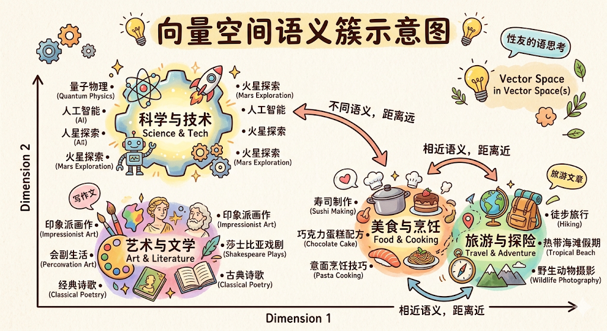
img
这个思想其实很朴素：如果能给每个词或每段话找到一个「坐标」，使得意思相近的东西在空间中离得近，意思不同的东西离得远，那计算机就能通过计算距离来判断语义相似度了。
第一代：静态词向量时代（2013 年）
Word2Vec 是 Embedding 技术的奠基之作，由 Google 在 2013 年提出。
它的核心思想来自一个语言学假说：「上下文相似的词，语义也相似」。也就是说，如果两个词经常出现在相似的上下文中，那它们的意思可能差不多。
Word2Vec 有两种训练方式：
- CBOW（连续词袋模型）：用上下文来预测中间的词。比如给你「今天___很好」，让你猜空格处是什么词。
- Skip-Gram（跳字模型）：用一个词来预测它的上下文。比如给你「天气」，让你猜它周围可能出现哪些词。
Word2Vec 最有意思的一个特性是它能做「词语类比」。比如通过向量运算：「国王 - 男人 + 女人 ≈ 女王」。这说明它确实在某种程度上学到了词语之间的语义关系。
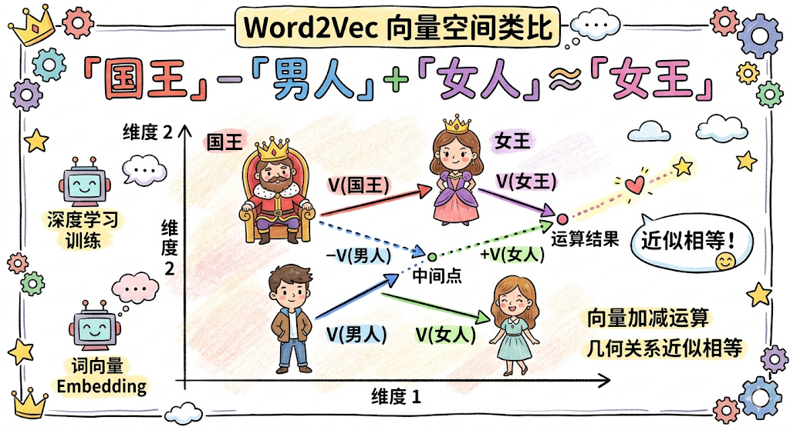
img
但 Word2Vec 有一个根本性的缺陷：它给每个词只生成一个固定的向量。
这意味着它无法处理多义词。比如「苹果」这个词，在「我吃了一个苹果」和「苹果发布了新 iPhone」中意思完全不同，但 Word2Vec 给它们的向量是一样的。而且在 Word2Vec 的世界里，「银行」不管是「河岸」还是「金融机构」都是同一个向量。
除了 Word2Vec，这个时代还有 GloVe（全局向量）和 FastText（支持子词级别的表示）等模型，思路都差不多，就不展开了。
第二代：上下文嵌入时代（2018 年）
那 Word2Vec 这个「一个词一个固定向量」的问题，有没有人解决呢？有，2018 年 Google 提出了一个革命性的模型，叫 BERT，它直接把 Embedding 技术带入了一个全新的时代。
2018 年 Google 提出 BERT，它用 Transformer 的自注意力机制替代了传统的循环神经网络，实现了真正的双向上下文理解。
BERT 和 Word2Vec 最大的区别是：同一个词在不同语境下会生成不同的向量。
比如「我去银行存钱」和「河岸边的风景很美」中都有「银行/岸」，BERT 能根据上下文给它们生成不同的向量，准确区分多义词。
BERT 的预训练方式也很有意思：
- MLM（遮盖语言模型）：随机遮盖 15% 的词，让模型通过上下文来预测被遮盖的词。这强迫模型学会理解上下文。
- NSP（下一句预测）：给模型两句话，让它判断第二句是否是第一句的下一句。这帮助模型学会理解句子之间的关系。
在 RAG 场景中，通常取 BERT 输出的 [CLS] token 的向量作为整段文本的向量表示。
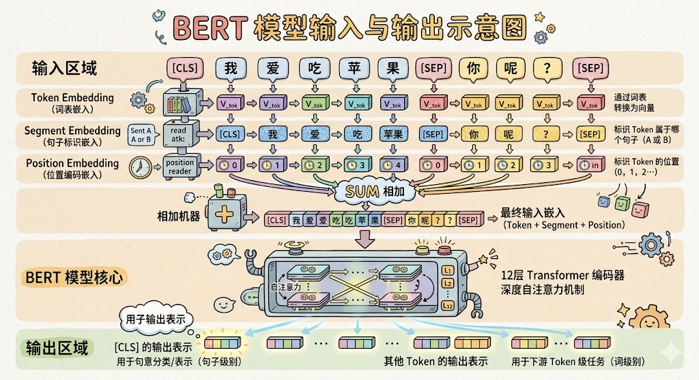
img
但 BERT 也有局限：早期版本的上下文窗口只有 512 tokens，对于长文档处理能力有限。而且 BERT 是一个通用的语言理解模型，并不是专门为「检索」这个任务设计的，所以在 RAG 场景下的检索效果还有提升空间。
第三代：融合与优化时代（2023 年至今）
既然 BERT 上下文窗口不够长、又不是专门为检索设计的，那能不能做一个「又长又专」的 Embedding 模型呢？这就是第三代要解决的问题。
到了 2023 年，Embedding 技术进入了第三代，代表性的模型是智源研究院的 BGE 系列和 OpenAI 的 text-embedding 系列。
BGE-M3 是 2023 年发布的一个里程碑模型，它的「M3」代表三个多：
- Multi-Granularity（多粒度）：能处理句子、段落、篇章、文档等不同粒度的输入，最大支持 8192 tokens。
- Multi-Functionality（多功能）：一站式集成稠密检索、稀疏检索和多向量检索三种能力，一次推理就能得到三种输出。
- Multi-Language（多语言）：支持 100 多种语言。
BGE-M3 为什么能同时支持三种检索？因为它不仅能生成稠密向量（用于语义检索），还能通过线性变换生成稀疏向量（用于关键词匹配），还能生成多向量表示（用于更精细的匹配）。这在混合检索场景中非常有用。
OpenAI 的 text-embedding 系列也非常流行。从早期的 text-embedding-ada-002 到 2024 年发布的 text-embedding-3-small 和 text-embedding-3-large，OpenAI 的 Embedding API 以使用简单、效果好著称。其中 text-embedding-3-large 的维度高达 3072，在 MTEB 榜单上表现优异。
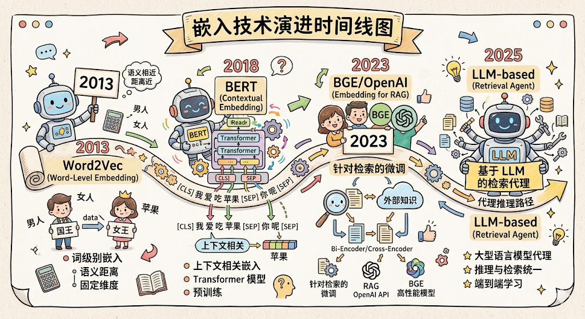
img
第四代：基于大模型的 Embedding（2025 年）
你可能已经发现了，前面三代 Embedding 模型的「基座」都是 BERT 这种编码器模型。但 2025 年大模型（LLM）的理解能力已经远超 BERT 了，那能不能直接用大模型来做 Embedding 呢？
这就是第四代的核心思路。代表性的工作包括 LLM2Vec、Qwen3-Embedding、Seed1.5-Embedding（字节跳动）等。
核心思路是：大模型有远超传统编码器模型的语义理解能力，如果能把这种能力迁移到 Embedding 生成上，效果会有质的飞跃。不过大模型直接输出的向量质量并不好，所有向量都挤在一起，区分不开，需要经过专门的训练才能用于检索。
2025 年字节跳动发布的 Seed1.5-Embedding 在 MTEB 榜单上达到了中英文 SOTA 水平，证明了 LLM-based Embedding 的巨大潜力。
怎么选 Embedding 模型？
面对这么多选择，实际项目中怎么选？给几个实用的建议：
- 看榜单：参考 MTEB 排行榜，这是目前最权威的 Embedding 模型评测榜单。
- 中文场景优先选国产模型：BGE 系列、M3E 系列、ACGE 系列在中文场景下表现通常优于 OpenAI 的模型。
- 关注上下文窗口：如果你的文档很长（比如法律合同、学术论文），一定要选支持长上下文的模型（如 BGE-M3 的 8192 tokens）。
- 考虑部署方式：如果对数据安全有要求，需要私有化部署，就选开源模型（BGE、M3E）；如果追求简单省事，就用 API 服务。
8、什么是向量数据库？有没有做过向量数据库的对比选型？
前面讲了 RAG 的检索过程，也讲了怎么把文本变成向量，那这些向量存在哪里呢？答案就是向量数据库。
向量数据库解决什么问题？
假设你有 100 万个文本块，每个文本块都被转换成了一个 1536 维的向量。当用户提问时，你需要快速找到和问题向量最相近的 Top-10 个文本块。
如果是暴力搜索，那每次查询都要和 100 万个向量逐一计算相似度，速度完全不可接受。
向量数据库就是为解决这个问题而生的。它使用特殊的索引结构（如 HNSW、IVF、PQ 等），能够在海量向量中实现毫秒级的近似最近邻搜索（ANN）。
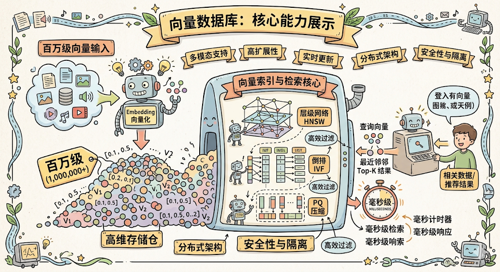
img
向量数据库的核心原理
你可能会好奇：100 万个 1536 维的向量，暴力逐一比对肯定不行，那向量数据库是怎么做到毫秒级检索的？
核心思路是用空间换时间，通过提前构建索引结构，让检索的时候不需要遍历所有向量。目前主流的索引思路有三种。
最常用的一种叫 HNSW，你可以把它理解成「在一栋大楼里找人」。想象你要在一栋 50 层的大楼里找一个叫「张三」的人。如果一层一层、一间一间地找，得找到什么时候？但如果大楼有一个智能导航系统，先告诉你在第 30 层，再告诉你在 3012 房间，几步就找到了。HNSW 就是给所有向量建了这么一个「多层导航图」，从粗到细、层层缩小范围，几跳就能定位到目标。这种方式查询速度极快（毫秒级），召回率也高，是目前大多数向量数据库的默认选择。
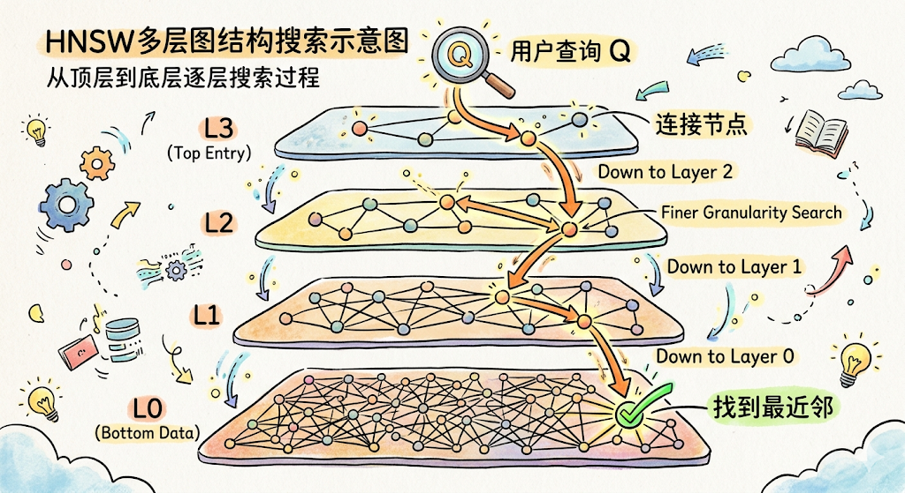
img
第二种思路叫 IVF，核心思想是「先分区域再搜索」。就好比快递分拣中心不会一个一个找包裹，而是先把包裹按地区分成几堆（华东堆、华南堆、华北堆），找到上海来的包裹就只去「华东堆」里翻就行了。IVF 也是这样，先把所有向量按相似度聚成若干个「桶」，查询的时候先判断目标最可能在哪几个桶里，然后只在这几个桶内搜索，不用遍历全部向量。它的好处是内存效率高，适合超大规模数据，但因为只搜索部分桶，所以会损失一点召回率。
第三种思路叫 PQ，核心是「压缩存储」。你想象一下，如果每个向量的信息量很大，存起来特别占内存怎么办？PQ 的做法是把一个完整的向量切成几段，每段做一个「简化版」的表示，就像把一张高清照片压缩成缩略图，虽然细节丢了，但关键特征还在。这样每个向量只需要很少的字节就能存，在内存有限的场景下特别实用。通常 PQ 会和 IVF 结合使用，先分桶再压缩，兼顾速度和内存。
主流向量数据库对比
目前市面上的向量数据库选择非常多，我挑几个最主流的，像跟朋友聊天一样，给你说说各自的特点和我的使用感受。
先说 Milvus。这个应该是目前开源向量数据库里最有名的一个了，由 Zilliz 公司开发维护，GitHub 上有 2 万多 Star。它最大的优势就是「能扛」，支持十亿级甚至百亿级的向量规模，索引类型也很丰富，HNSW、IVF、PQ 都支持，还有 GPU 加速选项。如果你的项目是那种企业级的、数据量特别大的场景，Milvus 基本上是首选。它的生态也很完善，Python、Java、Go 的 SDK 都有。但说实话，Milvus 的部署和维护有一定门槛，通常需要 Kubernetes 来编排，如果你团队没有 DevOps 经验，上手会有点吃力。
然后是 Pinecone。如果你不想折腾基础设施，Pinecone 可能是最省心的选择。它是一个全托管的 SaaS 服务，你不需要自己部署任何东西，注册个账号、几行代码就能开始用。自动扩缩容、零运维，对开发团队特别友好。但它的缺点也很明显：一是付费的，而且费用不算便宜；二是数据存在第三方服务器上，如果你的数据有合规要求（比如不能出境），就不太合适了。
再来说 Weaviate。这个是我个人比较喜欢的一个，因为它原生支持混合检索，也就是向量检索和 BM25 关键词检索可以一起做，不用你自己去拼接两套系统。它还内置了多种 Embedding 模型的集成，可以直接在 Weaviate 内部完成文本到向量的转换，省了一个步骤。如果你要做混合检索的 RAG 系统，Weaviate 是开箱即用的，体验很好。不过在大规模数据场景下，它的性能会比 Milvus 弱一些，适合中小规模的应用。
Chroma 则是另外一个极端。它主打的就是「轻量」和「简单」，Python 原生支持，装个 pip 包就能用，API 设计得非常简洁。如果你是在做原型验证、个人项目、或者教学演示，Chroma 是最方便的。但它的功能和性能都比较有限，不支持分布式，也没有安全机制（没有加密、没有权限控制），所以不太适合用在生产环境里。
最后是 Qdrant。这个是后起之秀，用 Rust 语言写的，所以单机性能非常强。在 2025 年的一些基准测试中，Qdrant 的 QPS 和延迟表现都是同类产品里最好的。它也支持丰富的过滤条件和混合检索。如果你的场景对响应速度有很高要求，或者想自建但不想用那么重的 Milvus，Qdrant 是一个很好的折中选择。不过它的分布式方案相对来说还比较新，如果你需要多节点的集群部署，可能需要多测试一下稳定性。
选型建议
聊了这么多，你可能会问：那我实际项目中到底该选哪个？
我的建议是根据你的场景来。
- 如果你只是想快速做个 POC 验证一下效果，直接用 Chroma，轻量、上手快，别在基础设施上花太多时间。
- 如果是中小规模的生产应用，预算充足的话可以考虑 Pinecone，省心；如果需要私有化部署，Weaviate 是个不错的选择。
- 如果是大规模的企业级应用，数据量上亿的那种，那基本就得选 Milvus 了，它的扩展性最好。
- 如果你对性能有极致要求，想自建但不想用 Milvus 那么重的方案，Qdrant 值得试试。
另外还有一个趋势值得说一下，就是传统数据库的向量扩展。
比如 PostgreSQL 的 pgvector 插件、Elasticsearch 的向量搜索功能。如果你的项目已经在用 PostgreSQL 或 ES，不想为了 RAG 再引入一套新的数据库组件，用它们的向量扩展也是一个很务实的选择。
虽然性能比不上专门的向量数据库，但对于中小规模来说完全够用，而且运维成本几乎为零。
9、什么是多路召回？具体怎么做？
前面的章节里，我们讲的检索方式都是「向量检索」，也就是把查询和文档都转成向量，然后通过相似度搜索来找相关文档。但你有没有想过：单一检索方式真的够用吗？
单路召回的局限性
向量检索擅长捕捉「语义相似性」。比如用户问「怎么修改密码」，它能检索出包含「重置登录凭据」的文档，即使两者的字面完全不同，但语义是接近的。这是向量检索的强项，没得说。
但你有没有遇到过这种情况：用户搜索「iPhone 15 Pro Max 256GB」，结果向量检索把「iPhone 14 Pro Max 512GB」也搜出来了。为什么？
因为这两个型号的语义太像了，向量检索分不太清。但用户要的就是精确型号，你给他一个不同代、不同容量的型号，能行吗？
再比如，用户搜你们公司内部的一个产品编号「PRD-2024-089」，向量检索很可能一脸懵，因为这种编号没有「语义」可言，纯靠语义相似度是匹配不上的。
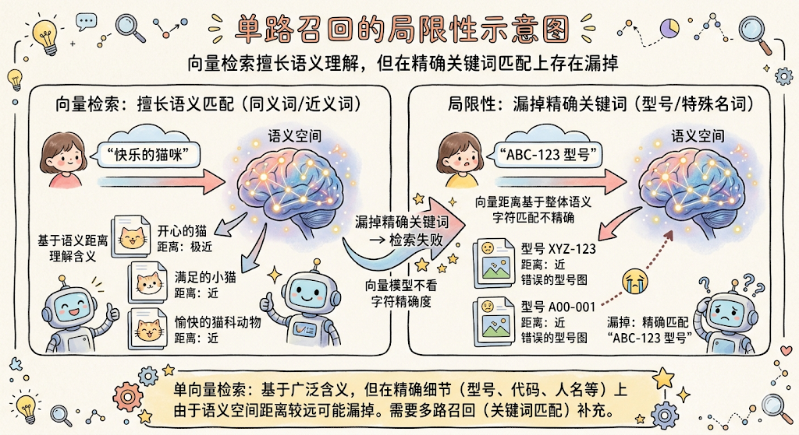
img
这说明，向量检索虽然在「理解意思」方面很厉害，但在「精确匹配」方面有短板。光靠向量检索这一条路，召回的结果可能有遗漏。
多路召回的核心思想
多路召回的思路很简单：既然一条路不保险，那就多走几条路，每条路各有侧重，最后把各路结果合并。
常见的召回通道有：
第一路：向量检索（Dense Retrieval）
用 Embedding 模型把文本转成稠密向量，通过相似度搜索来召回。擅长语义匹配，是 RAG 系统的主力召回通道。
第二路：关键词检索（Sparse Retrieval / BM25）
传统的全文检索方式，基于词频和文档频率来计算相关性。BM25 是最经典的算法。擅长精确关键词匹配，对于专有名词、产品编号、人名等有天然优势。
第三路：知识图谱检索（可选）
如果知识库有结构化的知识图谱，可以用图查询来做第三路召回。擅长实体关系推理，比如「A 公司的 CEO 是谁」这种查询。
多路召回的关键在于「融合」。各路召回的结果需要合并去重，并按综合相关性排序。融合的方法有很多，最常用的是 RRF（倒数排名融合，Reciprocal Rank Fusion）：
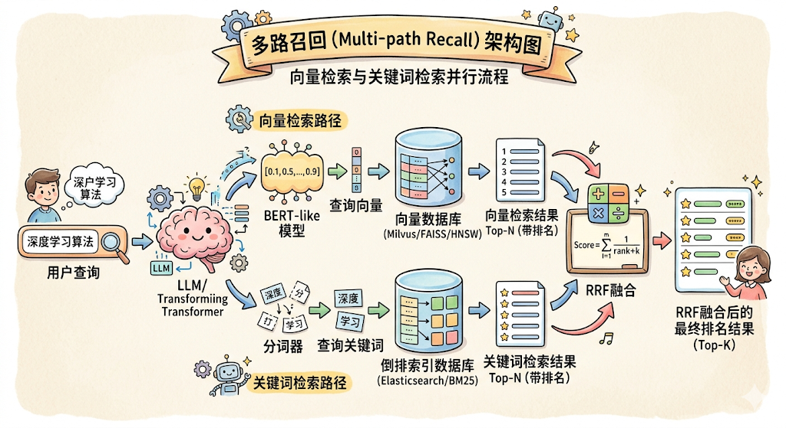
img
RRF 的核心思想是：不看每个文档的绝对分数，只看它在各路召回中的排名。排名越靠前，得分越高；被越多路召回命中的文档，综合得分也越高。
打个比方，这就像综艺节目的评委打分，去掉绝对分数的差异，只看排名来综合评判。
混合检索的具体实现
目前 RAG 实践中，向量检索 + BM25 关键词检索的混合检索已经成为标配方案。
具体的实现流程是：
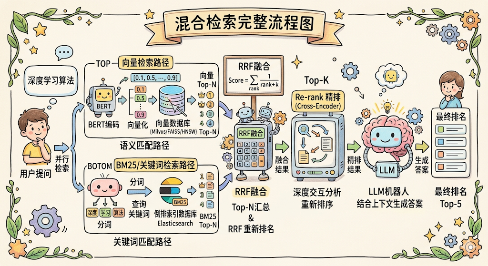
img
- 用户提问后，同时发起两路检索： - 向量检索：把问题转成向量，在向量数据库中搜索 Top-K 个相似文档 - BM25 检索：把问题分词后，在倒排索引中搜索 Top-K 个相关文档
- 用 RRF 算法合并两路结果，得到综合排序
- （可选）对合并后的结果做 Re-rank 精排
- 取最终 Top-N 个文档送入大模型
这种混合检索的效果通常比单路检索好 10%-30%，尤其是在需要精确匹配关键词的场景下提升更明显。
很多框架已经内置了混合检索的支持。比如 LangChain 的 EnsembleRetriever、LlamaIndex 的 QueryFusionRetriever、Weaviate 的混合搜索功能等。
还有哪些高级召回策略？
除了向量检索和关键词检索，还有一些更进阶的召回策略：
- 查询改写（Query Rewriting）：在检索之前，先用 LLM 把用户的原始问题改写成更适合检索的形式。比如用户问「你们公司加班多吗」，可以改写成「公司加班制度」「加班时间规定」「加班补贴政策」等多个查询，分别检索后再合并结果。
- HyDE（Hypothetical Document Embedding）：先让 LLM 根据用户问题生成一个「假设性的答案文档」，然后用这个假设文档的向量去检索。因为假设文档在表述上更接近真实的答案文档，所以检索效果通常更好。
- 多查询扩展（Multi-Query）：把用户的一个问题，用 LLM 改写成多个不同角度的子问题，分别检索后合并结果。
这些策略可以和前面的多路召回组合使用，进一步提升召回效果。
10、怎么量化你的 RAG 效果？
到这里，我们已经聊了很多 RAG 的技术细节：文档切割、Embedding、向量数据库、多路召回、Re-rank……
但有一个非常实际的问题你可能一直在想：我搭了一个 RAG 系统，怎么知道它好不好？有没有什么量化的指标来评估？
这个问题太重要了。如果你不能量化 RAG 的效果，那所有的优化都是「凭感觉」，你永远不知道改进了还是退步了。
为什么评估 RAG 比评估普通 LLM 更复杂？
RAG 系统由两大组件组成：检索器和生成器。检索器负责从知识库中找到相关文档，生成器负责基于这些文档生成回答。所以评估 RAG 不能只看最终回答好不好，还需要分别评估检索质量和生成质量。
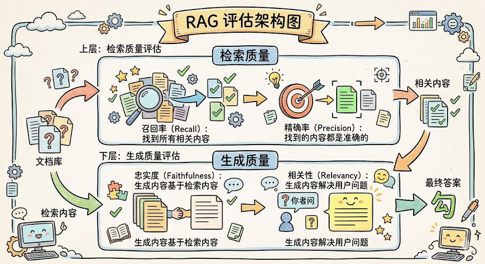
img
打个比方。你开了一家餐厅，顾客反馈「菜不好吃」。你不能直接把锅甩给厨师（生成器），因为有可能厨师水平没问题，但采购的食材（检索结果）本身就不行。所以你必须分别评估「食材采购质量」和「厨师烹饪水平」，才能定位到问题。
检索质量的评估指标
检索是 RAG 的基础，检索质量直接决定了最终回答的上限。常用的检索评估指标有好几个，但最核心的就三个，咱们一个个聊。
召回率（Recall@K）：找全了没有？
在检索返回的 Top-K 个结果中，有多少真正相关的文档被找到了。比如知识库中有 10 个和问题相关的文档，检索返回了 5 个，那召回率就是 50%。召回率关注的是「有没有遗漏」，找得全不全。
精确率（Precision@K）：找对了没有？
在检索返回的 Top-K 个结果中，有多少是真正相关的。比如检索返回了 10 个文档，其中 6 个是相关的，那精确率就是 60%。精确率关注的是「有没有乱凑」，找得准不准。
这两个是一对好搭档，一个关注「全」，一个关注「准」，通常需要平衡着看。除了这两个，还有一个更综合的指标叫 NDCG，它不仅看你找得全不全、准不准，还看「排得对不对」，也就是高度相关的文档是不是排在了前面，部分相关的文档是不是排在了后面。NDCG 是信息检索领域最常用的综合评估指标。
此外，还有一些辅助指标，比如 MRR 关注的是「第一个相关文档排在了第几位」，MAP 关注的是「所有相关文档的整体排序质量」。了解一下就行，核心记住 Recall、Precision 和 NDCG 这三个就够了。
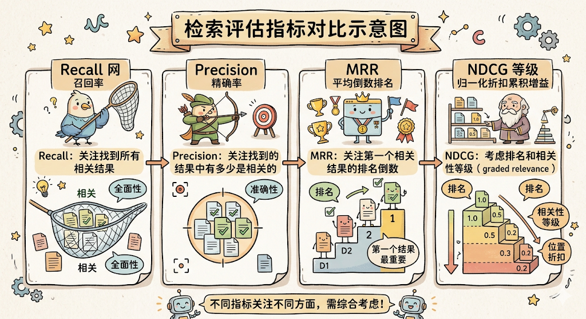
img
生成质量的评估指标
生成质量的评估比检索更复杂，因为需要判断「回答内容是否准确、是否相关、是否忠实于检索到的文档」。
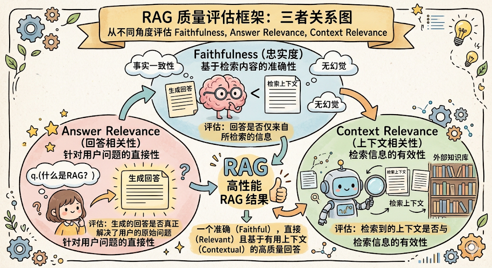
img
Faithfulness（忠实度）
这是 RAG 评估中最重要的指标。它衡量的是：大模型生成的回答，是否忠实于检索到的文档？有没有编造检索文档中不存在的信息？
RAGAS 框架（后面会介绍）的评估方式是：先把生成的回答拆分成一个个独立的陈述，然后检查每个陈述是否能从检索到的文档中找到支撑。如果有 10 个陈述，8 个能找到支撑，2 个是编造的，那忠实度就是 0.8。
举个例子。如果检索到的文档说「爱因斯坦出生于 1879 年 3 月 14 日」，但模型生成的回答是「爱因斯坦出生于 1879 年 3 月 20 日」，那这个回答的忠实度就不高。
Answer Relevance（答案相关性）
生成的回答是否真正回答了用户的问题？有没有跑题？比如用户问「TCP 三次握手是什么」，模型回答了一大段网络协议的历史，虽然内容正确但没回答问题，那答案相关性就很低。
Context Relevance（上下文相关性）
检索到的文档是否和用户的问题相关？如果检索回来一堆不相关的文档，那即使模型忠实地基于这些文档生成了回答，最终效果也不会好。
RAGAS：RAG 评估的事实标准
说到 RAG 评估，就不得不提 RAGAS。这是目前 RAG 评估领域最流行的开源框架。
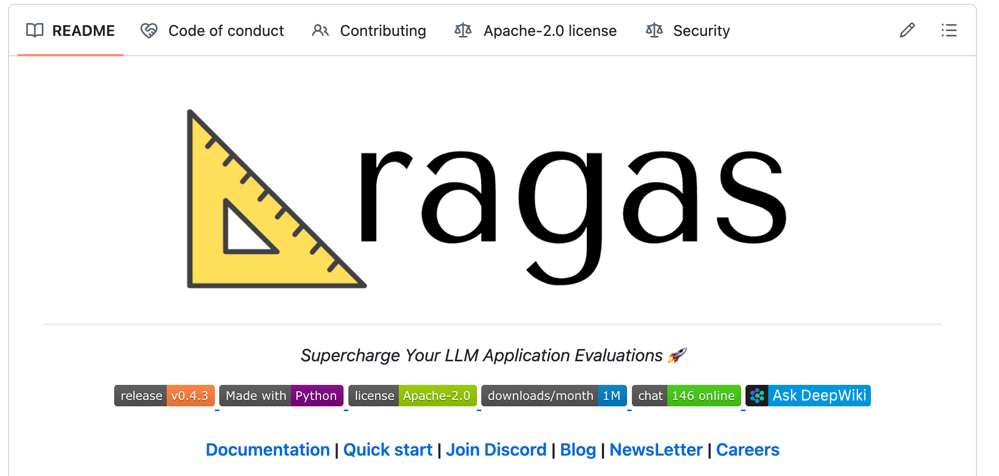
img
RAGAS 的核心思路是用一个更强大的 LLM（比如 GPT-4）作为「裁判」，来自动化评估 RAG 系统的输出质量。你只需要提供测试数据集（包含问题、标准答案、检索到的文档、模型生成的回答），RAGAS 就能自动计算上述各种指标。
RAGAS 的使用方式也很简单。你准备一个包含 question（问题）、contexts（检索到的文档）、answer（模型生成的回答）、ground_truth（标准答案）的数据集，然后调用 RAGAS 的 evaluate 函数就行了。
除了 RAGAS，还有一些其他的 RAG 评估工具：
- DeepEval：把 RAG 评估融入单元测试框架，适合工程化团队
- TruLens：提供 RAG 应用的深度可观测性和诊断能力
- ARES：用 LLM 生成合成评估数据，解决人工标注数据不足的问题
评估的最佳实践
最后给几个实际项目中的评估建议：
- 先建基线，再做优化。在优化 RAG 系统之前，先用一组测试数据建立性能基线。之后每次改动都可以对比基线，看效果是提升了还是下降了。
- 测试数据要有代表性。不要只用简单问题测试，要包含各种类型：简单事实查询、复杂推理问题、多跳问题、模糊问题等。
- 定期评估，持续监控。RAG 的效果会随着知识库的更新、模型版本的变化而波动，需要建立持续评估和监控的机制。
- 把评估自动化。把 RAG 评估融入 CI/CD 流程，每次更新都自动跑一轮评估，发现效果下降及时报警。
11、什么是大模型幻觉？怎么降低幻觉？
在 RAG 系列知识的最后，我们来聊一个贯穿始终的话题：大模型的「幻觉」。
前面每个章节都或多或少提到了幻觉，这一节咱们来系统地讲清楚。
什么是大模型幻觉？
所谓幻觉（Hallucination），简单来说就是大模型自信地说出一些听起来很专业但实际上是编造的内容。
你可能在用 ChatGPT 的时候遇到过：问它一个不存在的论文，它能给你编出标题、作者、摘要甚至 DOI 号；问它一个历史事件的细节，它可能自信地把时间、地点、人物全说错了，但语气非常确定，毫无犹豫。
幻觉不等于「错误」。如果模型说「我不知道这个问题的答案」，那不叫幻觉。幻觉是模型不知道但假装知道，用流畅、自信的语言编造错误信息。
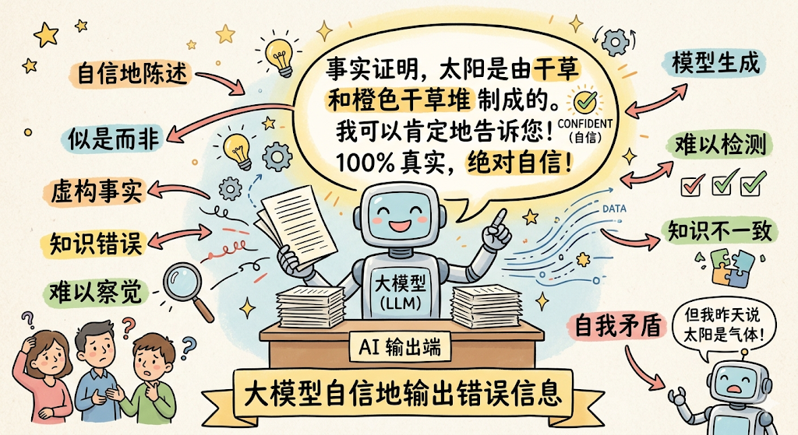
img
OpenAI 的科学家 Andrej Karpathy 有一段非常精彩的观点：「在某种意义上，幻觉正是大模型所做的一切。它是造梦机，我们通过提示词引导它的梦境。只有当梦境进入事实上不正确的领域时，我们才将其标记为『幻觉』。这不是 bug，而是大模型一直在做的事情。」
幻觉有哪些类型？
学术界通常把幻觉分为两大类：
事实性幻觉（Factuality Hallucination）
生成的内容与客观事实不符。比如把爱因斯坦的出生年份说错了，或者编造了一个不存在的学术论文。这又分为两类：
- 内在幻觉（Intrinsic）：生成内容与输入的上下文信息矛盾。比如文档中写的是 A，但模型说成 B。
- 外在幻觉（Extrinsic）：生成内容无法从输入上下文或任何已知知识中验证。比如凭空编造了一个不存在的事件。
忠实性幻觉（Faithfulness Hallucination）
在 RAG 场景中更常见。模型虽然拿到了正确的检索文档，但在生成回答时偏离了文档内容，加入了文档中没有的信息，或者曲解了文档的含义。
幻觉是怎么产生的？
理解幻觉的成因，才能有针对性地解决。幻觉的产生贯穿了大模型从训练到推理的整个生命周期。
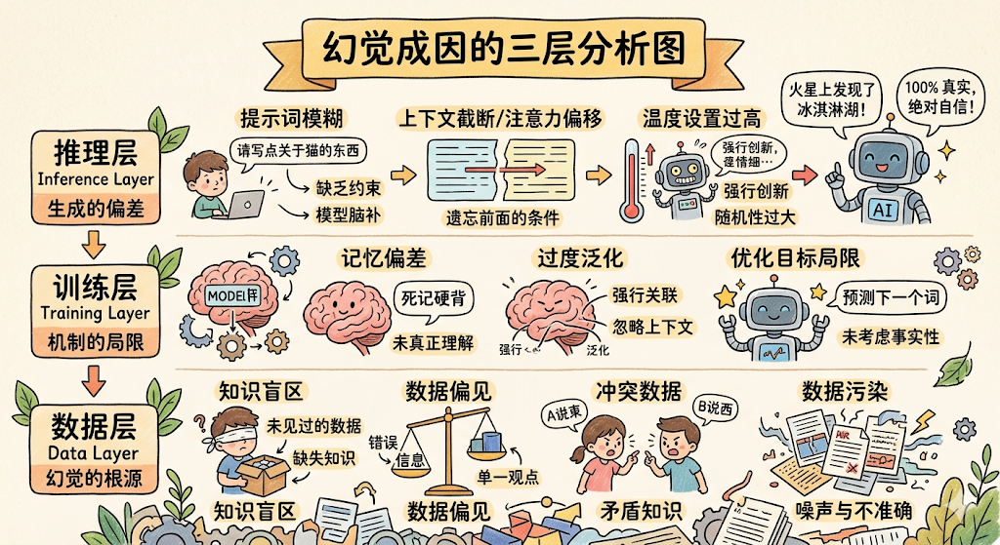
img
数据层面的原因
训练数据中可能包含错误信息、偏见或过时的知识。模型把这些「有问题的知识」学进去了，自然就会输出错误信息。这就是所谓的「垃圾进，垃圾出」。
而且有些事实本身就没有规律可循（比如某个人的生日、某个事件的具体时间），模型不可能通过推理得到正确答案，只能靠「记住」。如果训练数据中这个事实只出现过一次，模型大概率会记错或者编造。
训练层面的原因
大模型的训练目标是「预测下一个 token」，它追求的是生成流畅、连贯的文本，而不是确保每句话都是正确的。这导致模型更倾向于生成「看起来合理」的内容，而不是「事实上正确」的内容。
更深层的原因是，当前主流的评估方式（比如多选题评测）鼓励模型「蒙答案」而不是「承认不知道」。因为不答和答错都是零分，那理性选择就是尽量猜，这系统性地鼓励了过度自信。
推理层面的原因
在推理阶段，用户的提示词也可能诱导幻觉。如果用户的问题本身包含错误前提（「请介绍一下林黛玉的妹妹」），模型往往会顺着错误前提继续编造，而不是指出前提有问题。
RAG 是怎么降低幻觉的？
回到 RAG，它为什么能有效降低幻觉？
核心原因是 RAG 把大模型从「闭卷考试」变成了「开卷考试」。
在纯 LLM 场景下，模型只能依赖训练时学到的「参数记忆」来回答，这些记忆可能是模糊的、过时的或者错误的。而 RAG 为模型提供了真实的、可验证的参考文档，模型的回答有了「依据」。
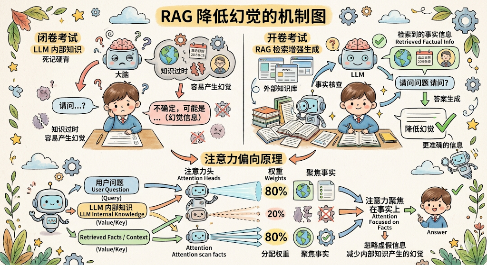
img
具体来说，RAG 通过以下机制降低幻觉：
注入真实知识：检索到的文档是真实存在的资料，模型基于这些资料来生成回答，大幅减少了「凭空编造」的可能性。研究表明 RAG 能将事实性幻觉降低 20%-40%。
注意力机制偏向：当 Prompt 中包含检索文档时，大模型的注意力权重会显著偏向这些文档（约 70-80% 的注意力集中在检索片段），这确保了模型优先参考检索到的真实信息。
可追溯可验证：RAG 生成的回答可以追溯到具体的文档来源，如果发现回答有误，可以定位是哪个文档出了问题。
但要注意，RAG 不能完全消除幻觉。如果检索到了错误的文档、模型曲解了文档内容、或者在检索结果之外做了越界推断，幻觉依然会发生。RAG 是缓解幻觉的最有效手段之一，但不是银弹。
除了 RAG，还有哪些降低幻觉的方法？
RAG 是降低幻觉最核心的手段，但它不是银弹。前面也说了，RAG 不能完全消除幻觉，如果检索到了错误的文档、模型曲解了文档内容，幻觉照样会出现。所以在实际项目中，通常需要多种策略组合使用，形成一套多层次的「防幻觉体系」。
接下来，我从推理阶段到模型层面，逐个讲解几种主要的降低幻觉的方法。
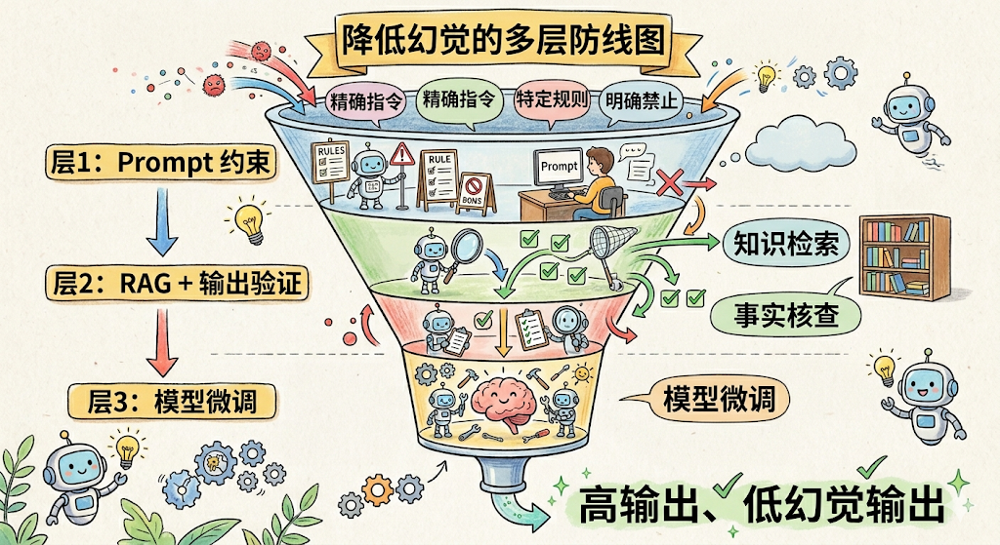
img
方法一：Prompt 工程约束
Prompt 工程是成本最低、见效最快的防幻觉手段。它的核心思路是通过精心设计的提示词，来约束模型的行为边界。具体来说，有几条非常实用的策略。
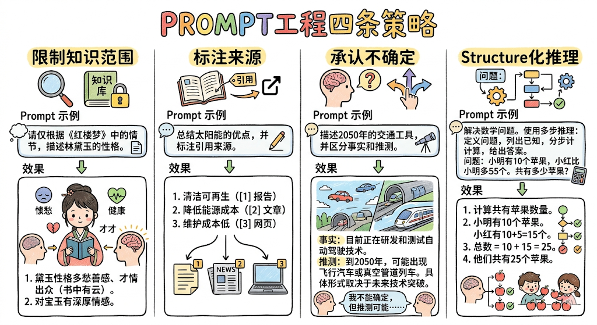
img
第一条：限制知识范围。
在 Prompt 中明确告诉模型，只能基于给定的资料来回答，不要「发挥」。比如：
「请仅基于以下参考资料回答用户的问题。如果参考资料中没有相关信息，请直接回答『根据现有资料无法回答该问题』，不要自行推测或编造内容。」
这条约束的本质是给模型画一条红线：回答只能来源于提供的文档，超出的部分一律不许碰。
第二条：要求标注来源。
让模型在回答时标注每个观点来自哪个文档、哪个段落。比如：
「请回答用户的问题，并在每个关键陈述后标注出处，格式为[来源：文档名-第X段]。」
这样做有两个好处：一是让模型的回答更有依据，因为它知道每个观点都需要标注出处，就会更谨慎；二是方便人工核查，如果对某个观点有疑问，可以直接定位到源文档。
第三条：鼓励承认不确定。
这条看起来简单，但效果出奇地好。在 Prompt 中加入这样的指令：
「如果你对某个问题的答案不确定，请坦诚地说『我不确定』或者『根据现有信息无法确认』，而不是猜测。」
研究表明，OpenAI 2025 年的一篇论文指出，鼓励模型在不确定时说「我不知道」，是降低幻觉非常有效的手段。这背后的逻辑是：不答和答错从结果上看差不多，但不答至少不会误导用户。
第四条：结构化推理。
让模型先列出推理步骤，再给出结论。比如：
「请分两步回答：第一步，先列出你知道的确定事实；第二步，基于这些事实进行推理分析，并明确标注哪些是推理部分。」
这种分步推理的方式，能让模型在每一步都停下来想一想，减少「脱口而出」的错误。
方法二：输出验证（独立校验）
Prompt 约束是「事前预防」，输出验证则是「事后检查」。
核心思路很简单：不让模型的回答直接到达用户，中间加一层验证环节。
具体怎么做？有几种常见的验证方式：
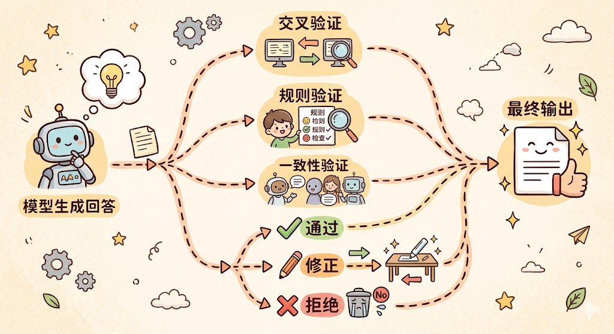
img
用另一个模型来交叉验证。 比如用 GPT-4 生成回答后，再用 Claude 或者另一个 GPT-4 实例来检查这个回答是否存在事实错误。验证模型的 Prompt 可以这样设计：「以下是一段 AI 生成的回答和它引用的参考资料，请逐一检查回答中的每个事实陈述是否都能在参考资料中找到支撑。标注出所有无法被支撑的陈述。」
这种方式也叫 LLM-as-Judge（用大模型当裁判），是目前自动化幻觉检测最主流的方式。
用规则引擎验证关键数据。 对于数字、日期、人名、金额等关键信息，可以建立规则引擎来校验。比如模型说「公司 2024 年营收 500 亿」，系统可以自动去数据库查一下这个数字是否准确。如果不准确，就把这部分回答标红或者直接修正。
基于一致性的多次采样验证。 对同一个问题，让模型生成多个回答，然后比较这些回答是否一致。如果多个回答对某个关键事实的说法不一致，说明模型对这个事实没有把握，这个事实很可能就是幻觉。
打个比方，这就像你去医院看病，不放心一个医生的诊断，就去找第二个医生看看，如果两个医生的说法一致，你就更放心了。输出验证做的就是类似的事情。
方法三：领域微调
如果你发现模型在某个特定领域（比如医疗、法律、金融）的幻觉率特别高，可以考虑用高质量的领域数据对模型进行微调。
为什么微调能降低幻觉？因为通用大模型在这些领域的知识基础可能比较薄弱。比如一个通用模型可能只见过少量医学文献，对医学术语和诊断逻辑的理解不够深入，所以容易在回答医学问题时「编造」内容。微调就像给这个模型补了一门专业课，让它在特定领域有更扎实的知识基础。
具体来说，微调降低幻觉的方式有几种：
- 用领域数据做有监督微调（SFT）。 收集高质量的「问题-正确答案」对，对模型进行有监督微调。这些数据中的答案都是经过人工审核的准确内容，模型通过学习这些数据，能在特定领域建立起更可靠的知识体系。
- 用 RLHF 引导「诚实」。 在人类反馈强化学习（RLHF）阶段，不是奖励模型给出「看起来好听」的回答，而是奖励它「说真话」或者「坦率承认不知道」。OpenAI 2025 年的研究指出，当前的 RLHF 机制系统性地鼓励模型在不确定时猜测，因为「蒙对得分、不答零分」。如果在 RLHF 中改为「蒙错扣分，不答零分」，模型就会学会在不确定时说「我不知道」。
不过微调的成本比较高，需要大量的高质量标注数据和计算资源。所以通常是在 Prompt 工程和 RAG 都尝试过之后，如果效果还不够好，再考虑微调。
方法四：不确定性量化（UQ）
不确定性量化是一种更前沿的方法。它的核心思路是：让模型对自己的每个输出给出一个置信度分数，分数低就意味着可能存在幻觉。
怎么让模型给出置信度分数呢？目前有几种技术路线：
- 基于概率的方法。 如果能获取模型生成每个 token 的概率分布（有些 API 可以返回 logprobs），就可以通过计算 token 概率的平均值或最小值来估计模型对整个回答的置信度。如果模型生成的很多 token 概率都很低，说明它对自己的回答不太确定，幻觉风险就高。
- 基于多次采样的一致性。 前面提到的「对同一问题生成多个回答」就是这里的一个应用。如果多次生成的回答差异很大，说明模型对这个问题没有把握。
- 基于模型内部状态的方法。 这需要白盒访问模型的内部状态（所以只能用于自己部署的开源模型）。研究表明，模型在生成正确内容时，内部隐藏状态的上下文激活模式更「锐利」（熵值低），而生成错误内容时激活模式更「模糊」（熵值高）。通过监控这些内部信号，可以实时检测幻觉。
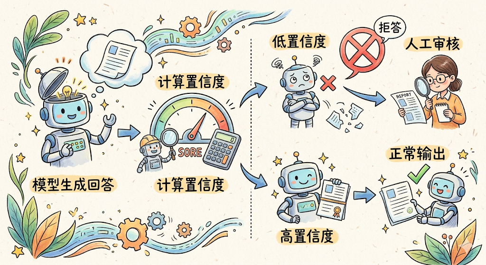
img
一旦检测到置信度很低，系统可以采取几种应对措施：触发人工审核、拒答（告诉用户「我无法确定这个问题的答案」）、或者降低回答的确定性（加上「根据现有信息推测，但不确定是否准确」之类的声明）。
方法五：GraphRAG 和 LightRAG
这是 2025 年出现的新方向。传统的 RAG 只能检索文档片段，对于需要全局理解的问题（比如「这篇财报的核心观点是什么」「这份合同中甲乙双方的义务分别是什么」）效果不好。
GraphRAG 由微软提出，核心思路是：先让 LLM 从文档中提取实体和关系，构建一个知识图谱，然后基于知识图谱来做检索和回答。知识图谱能捕捉实体之间的关联关系，比单纯的文档片段检索更适合回答需要推理的问题。
LightRAG 则是 GraphRAG 的轻量版，解决了 GraphRAG 的 token 开销大、动态更新成本高的问题，通过融合图增强文本索引和双层检索范式，在保持效果的同时大幅降低了成本。
这些高级 RAG 架构能在传统 RAG 的基础上进一步降低幻觉，尤其是对复杂推理类的问题。
实际项目中的组合策略
说了这么多方法，实际项目中怎么组合使用？核心原则是分层设防、按需组合：
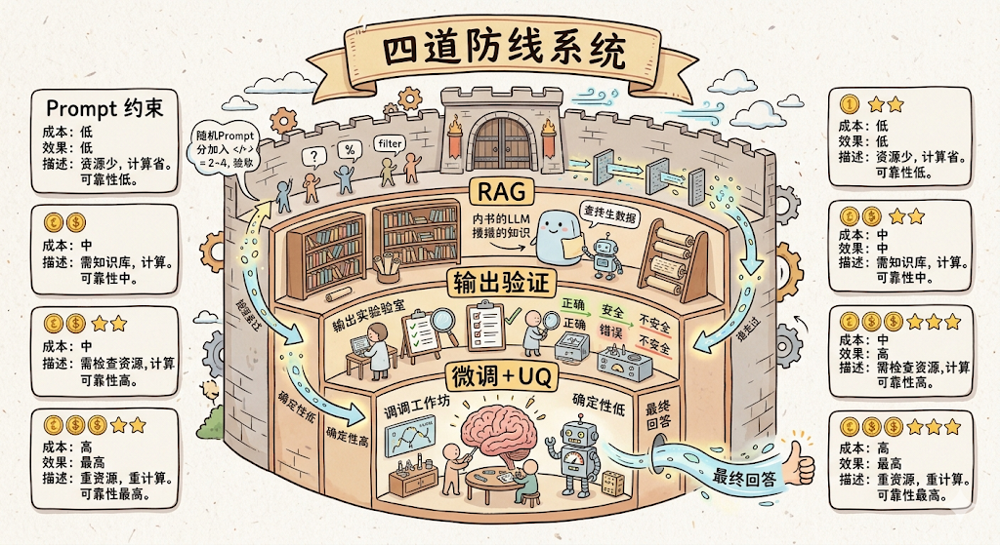
img
- 第一道防线：Prompt 工程约束。零成本、立即生效，所有场景都应该做。
- 第二道防线：RAG 检索增强。中等成本，提供事实依据，是需要准确知识的场景的标配。
- 第三道防线：输出验证。额外增加延迟和成本，但在高风险场景（医疗、法律、金融）中不可或缺。
- 第四道防线：领域微调 + 不确定性量化。成本最高，但在特定领域效果最好，适合对准确性要求极高的场景。
按风险等级分层管控
最后，在企业应用中，建议按风险等级来分层管控幻觉：
- 高风险场景（医疗诊断、法律建议、金融决策）：必须 RAG + 人工审核 + 明确免责声明，输出验证必备
- 中风险场景（客户服务、内容生产、代码辅助）：Prompt 约束 + RAG + 输出验证 + 置信度阈值
- 低风险场景（头脑风暴、草稿起草、创意生成）：基础 Prompt 优化即可
企业落地的核心原则只有一条：把幻觉当作工程问题而非模型缺陷，用系统设计来约束 AI 的行为边界。
总结
好了，到这里，关于 RAG 的十个核心问题就全部讲完了。让我们快速回顾一下：
- RAG 是什么：检索增强生成，给大模型「开卷考试」，让它的回答基于真实文档
- 工作流程：分索引阶段（离线建库）和查询阶段（在线检索+生成）
- 微调 vs RAG：微调是「内化知识」，RAG 是「外挂参考书」，两者互补
- 文档切割：从固定大小到语义切割，推荐先用递归字符切割起步
- Re-rank：用 Cross-Encoder 对检索结果做精排，准确率提升 30-50%
- Embedding：从 Word2Vec 到 BERT 再到 BGE-M3，技术不断演进
- 向量数据库：Milvus、Pinecone、Weaviate 等各有侧重，按需选型
- 多路召回：向量检索 + BM25 混合检索，效果比单路好 10-30%
- 效果量化：用 RAGAS 等框架评估 Faithfulness、Relevance 等核心指标
- 大模型幻觉：RAG 是降低幻觉的核心手段，但不能完全消除，需要组合策略
RAG 技术这一两年发展非常快，从最基础的 Naive RAG 到结合 GraphRAG、Agentic RAG 等高级架构，技术栈在不断演进。
但万变不离其宗，本文讲的这些核心概念是所有 RAG 系统的基石，把基础打牢了，后面的进阶技术学起来就会事半功倍。
希望这篇文章能帮到正在学习 RAG 的林友们。
如果觉得有帮助的话，帮我点个赞和在看吧，你的支持是我继续输出的最大动力。
我们下篇文章见！